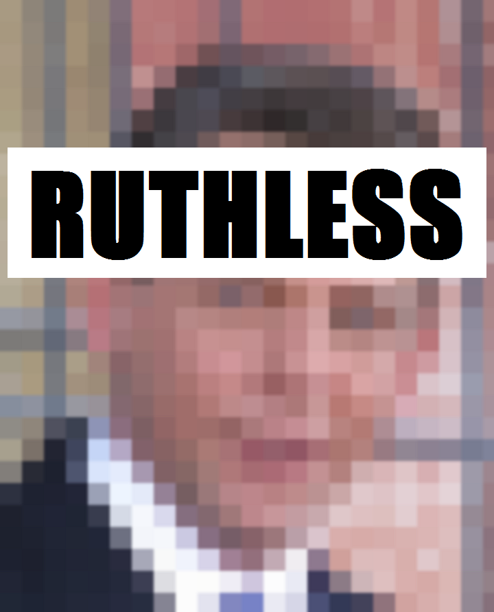

← Саентология
Чудо с Дэвидом — отрывок из книги отца
Рон Мицкевич (Мискэвидж) опубликовал книгу “Безжалостный” (Ruthless), в которой рассказывает о саентологии и его сыне Дэвиде Мицкевиче, который сейчас управляет церковью.

Чудо с Дэвидом
Взрослея, все мои дети кроме Дэвида были здоровы. Крест, который он вынужден был нести - тяжелый случай астмы, которая мучала его все его ранние годы. Недуг стал очевидным, когда он был ребенком, всего лишь несколько месяцев от роду. Он не мог выдыхать, а атаки становились частыми. Страдающие астмой могут забирать воздух в легкие, но не могут заставить его выходить обратно, и было тяжело видеть приступ у другого человека, особенно если это твой ребенок.
Его педиатр делал инъекции адреналина, чтобы облегчить его состояние, когда он задыхался. Я не хотел, что это продолжалось, так как я слышал, что это не слишком хорошо для ребенка, так что я всегда был в поиске других способов борьбы с недугом. Не говоря уже о том, что он просто завывал от боли, когда его тыкали иглой.
Астма сделала его несчастным. Это действительно разрушало его жизнь в течение нескольких лет. В начале приступы могли случаться раз в полгода, но они стали более частыми, как он стал немного старше. Приступы случались в ночное время, и он был не в силах дышать и плакал. Это было больно видеть, потому что в остальном он был счастливым ребенком.
Дошло до того, что один раз в процессе приступа атаки, он начал синеть. Он не мог выдохнуть, и Лоретта и ее сестра, обе медицинские сестры, стояли и говорили: “Боже, боже!” Но ничего не делали. Затем, я ударил его по попке, и он закричал, что заставило его выдохнуть, и приступ остановился. Потом они критиковали меня за такую жестокость, и это меня задело, потому что они там просто стояли и ничего не делали. Я бы сделал что угодно, чтобы помочь ему нормально дышать снова.
Когда ему было около пяти лет, один приступ был настолько тяжёлым, что он попал в больницу и лежал в кислородной палатке. Я чувствовал себя беспомощным, наблюдая, как он лежал там, его грудь вздымалась, как он изо всех сил старался дышать. Он был там в течение нескольких дней, и я купил ему плюшевую обезьяну, чтобы у него был друг.
Позднее, в середине зимы, случился еще один приступ. Его рот был открыт, но он просто не мог выдохнуть. Опять он начал синеть. Это было серьезно. У меня была идея. Я схватил его на руки и побежал наверх в ванную. Я снял свою одежду и включил душ. Это не предвещало быть приятным, но я должен был сделать что-то. Я снял одежду, тоже взял Дэвида на руки и вошел в душ. Я не хотел, чтобы он думал, что он был наказан за то, что происходит, так что я пошел с ним.
“Слушай”, - сказал я, -“Я знаю, это будет ужасно, но я должен сделать что-то, чтобы помочь тебе.”
Я держал его на руках, и теплая вода захлестнула нас обоих. Резко я выключил горячую воду, и в нас мгновенно ударила ледяная вода. Это вызвало рефлекс удушья у Дэвида, и он начал тяжело бесконтрольно дышать. Я так сделал, поверьте мне. Это было болезненно для нас обоих, но приступ закончился. Я взял большое полотенце и вытер его. Я чувствовал, как его сердце скачками возвращается к нормальному состоянию, и как отступали мурашки. Мой собственный страх сошёл на нет, когда я увидел, что с моим маленьким мальчиком всё в порядке. Я поцеловал его, и после этого случая он был в порядке.
Я знал, что эти меры носят лишь временный характер, и что будет новый приступ, так что я всегда искал способы, чтобы понять их причину. Я имел дело только с симптомами, так как мог. Врач, который делал ему инъекции адреналина, тоже лишь лечил симптомы. Я хотел знать, что, черт возьми, был причиной этих приступов, которые так портили ему жизнь.
Я узнал об одном специалисте и взял с собой Дэвида, чтобы посетить его. Специалист сказал, что нужно сделать кожные пробы. Мы сняли рубашку с Дэвида, и он стоял между моими коленями лицом ко мне. Медсестра взяла доску площадью около фута, на ней было более 30 игл и прижала к его спине, пока от каждой иглы не пошла кровь. Я был свидетелем этого и думал, вы сволочи, лучше бы вы сделали что-то полезное. Потом она взяла поднос с большим количеством бутылок, и брала немного раствора из каждой бутылки и мазала в каждый из разрывов в его коже. Пришел врач, осмотрел реакции и сказал нам вернуться через пару недель для получения результатов теста.
Через две недели мы вернулись, и диагноз врача не наполнили меня уверенностью. Он сказал, что у Дэвида аллергия на бактерии в горле, это не имело смысла для меня вообще. Из довольно неуверенного объяснения специалиста, у меня сложилось лишь впечатление, что пытался что-нибудь выдумать. Почему приступы астмы были прерывистым и случайными, если бактерии были у него в горле все время? Правда, этот специалист помог мне одним способом: его диагноз подтверждал мою идею, что приступы астмы Дэвида были в некотором роде психосоматическими.
Иногда, когда я видел, что приступ приближался, я брал его в гараж и заставлял поднимать тяжести. Часто, это помогало предотвратить приступ. Идея пришла ко мне однажды, когда я вспомнил, что случилось со мной в морской пехоте.
Тогда я пошел к стоматологу на базе. Через неделю, мое лицо стало болеть каждый день в 4:30. Мне казалось, что мое лицо было в железной маске. Каждый вечер эта боль убивала меня. Я вернулся к зубному врачу, и он сказал: “О, да, это невралгия лица.” Он дал мне аспирин и отпустил меня. Он назвал эту болезнь, но он не мог побороть её.
На следующий день в 4:30 мое лицо снова начало меня терзать. Я знал, что я должен был сделать что-то, поэтому я надел свой камуфляж и пошел на аэродром в тренажерный зал. Я полагал, что вместо того, чтобы хандрить, чувствуя жалость к себе, я мог бы начать делать тренировки. Там был еще один парень, и я сказал: “Вы Хочешь поднимать тяжести? Мы можем подстраховать друг друга”.
Мы начали поднимать тяжести. Он подстраховал меня на нескольких жимах. Потом я подстраховал его. Потом он меня подстраховал. Потом я его подстраховал. Потом … погоди, подумал я. Мое лицо больше не болело. Боль ушла. Я просто сидел на скамейке, пытаясь выяснить, что, черт возьми, только что произошло. Я придумал теорию: боль должна нуждаться в вашем внимании. Если вы можете направить свое внимание от боли, она исчезнет. Что-то, например, штанга, которая могла бы раздавить мою грудь, если бы я бросил ее, направляло мое внимание от боли, и заставляло боль уйти. Так закончилась невралгия на моем лице. У меня ее больше никогда не было. Удивительно!
Несколько лет спустя нечто подобное произошло, когда я простудился, и у меня был жар, и приятель заставил меня пойти на лыжах с ним. После моего третьего спуска с горы, мои симптомы простуды исчезли полностью. Так или иначе, я предполагал, что если вы можете заставить ваше внимание уйти от того, что вас беспокоит, то беспокойство исчезнет. Так моя предыдущая теория получила еще одно подтверждение.
Так что, когда у Дэвида намечался приступ астмы, то, если я ловил момент достаточно рано, брал его в гараж и заставлял его поднимать тяжести, и это часто облегчало приступ. Иногда в гараже было ноль градусов. Я одевал его, брал в гараж, и заставлял его делать жим лежа, пока он не говорил, “пап, я в порядке. Я чувствую себя лучше”. И ему было лучше. На какое-то время.
Примерно в то же время, в 1968 году, у меня был друг по имени Нельсон Сэнди, который продавал со мной кухонную посуду. Однажды он сказал: "Эй, Рон, ты не хотел бы делать дополнительно сто тысяч баксов в год? Я собираюсь принять участие кое в чем, и ты бы тоже присоединился. Это называется “Праздничная магия.” В 1960-х годах, 100 тысяч долларов было целым состоянием.
Он пригласил меня на встречу, чтобы узнать больше об этом. На встрече рекламировали какое-то барахло (это был бизнес по продаже косметики), и первая реакция была, “Ну и ерунда,” потому что единственное, что они делали, так это продавали право на распространение товара, даже не думая о доставке товаров до потребителей. Праздничная Магия была одной из первых пирамид и обанкротилась несколько лет спустя, благодаря действиям Комиссии по ценным бумагам и биржам и Федеральной комиссии по торговле.
После встречи, Нельсон, и я пошли в бар сделать пру глотков. Он рассказал мне больше об этом бизнесе, и я заинтересовался. Я сказал сам себе: “Это могло бы выстрелить.”
Так что я подключился. С инвестициями в 5000 долларов, я стал “мастером-дистрибьютором”. Вот как работала схема: чем больше вы покупали продукта, тем большую скидку вы получали. Идея заключалась в том, чтобы продать продукт дистрибьюторам под вами, а вы забирали разницу между вашей ценой и тем, за сколько вы ее продавали. Ты нанимаешь больше дистрибьюторов под дистрибьюторами и делаешь доход от разницы в цене. В концепции ничего плохого, за исключением того, что все знают, что эти схемы не работают, хотя это я понял несколько позже.
Позже, в 1969 году, три других дистрибьютора, и я сформировали так называемую корпоративную команду Праздничной Магии. Мы все были хорошими рассказчиками и хорошо убеждали других, чтобы вкладываться в Праздничную Магию. Однажды вечером, мы проводили «семинар возможностей» в гостинице Маллард, вербуя новых дистрибьюторов. Член нашей команды разговаривал с парнем по имени Майк Хесс, в то время как я стоял в нескольких шагах от него, разговаривая с кем-то другим.
Однажды Майк сказал: “Да, я хочу участвовать в этом, потому что я саентолог, и мы верим в то, что нужно все испытать.”
Я услышал его замечание и повернулся к нему. "Что ты сказал? Что такое “саентолог”? "
Я задержал его и побеседовал об этом, может быть, в течение получаса. Само слово заинтересовало меня. Я никогда не слышал его раньше. Он сказал мне, что саентология призвана помогать людям стать более способными в жизни. Были и другие хорошие философии, сказал он, но разница с саентологией в том, что она предлагает практические вещи, которые вы можете делать, чтобы помочь себе.
Одной из фраз, которые он мне сказал, была “если вы станете саентологом, вам никогда больше не придется принимать аспирин.”
Это действительно задело мое любопытство. “Что ты имеешь в виду?”
“Ну”, - продолжил он, - “если у вас будет головная боль, вы сможете избавиться от неё, посмотрев на себя в зеркало и отдав головную боль человеку в зеркале.”
Дикая идея, не так ли? Вы встречаете людей в жизни, и их неизменный ответ будет издевательским “Нет, это не сработает.” Но у меня не было предрассудков. Я всегда был открыт к новым способам мышления или ощущениям.
Другой вещью, которую Майк сказал мне в тот день была “Если у вас нет под рукой зеркала, сделайте это: создайте мысленную картину себя, глядя на себя в зеркало, и дайте головную боль парню в зеркале.”
Через некоторое время я вёл машину по Южному Джерси и понял, что у меня действительно болит голова. Я подумал про себя, “я собираюсь попробовать это”. Я проверил, что вокруг меня не было никакого движения рядом, потом я сделал мысленную картину себя, глядя на себя в зеркало. Я отдал головную боль парню в зеркале. И моя головная боль ушла! Погоди, я сказал себе. Мне нужно проверить это. Это не фигня. Это что-то другое. Это отличается от всего, что я когда-либо испытывал в своей жизни. В этом-то и фокус.
Человек, который является саентологом или кто имеет некоторое знакомство с предметом, поймет, что произошло в тот момент. Человек, который не является саентологом будет абсолютно убежден в том, что это было совпадение или я просто сам себя заговорил. Вне зависимости от чьей-либо интерпретации, это то, что на самом деле случилось со мной.
У меня был номер телефона Майка, поэтому я позвонил и сказал ему: “Я хотел бы узнать больше об этом.” Он послал меня к месту в Вудбери, Нью-Джерси, кафе Оугл. Парень по имени Фрэнк Оугл был хозяином кафе, и каждый вторник вечером люди приходили в это место, рассаживались, обсуждая саентологию. Франк в основном читал лекции о различных аспектах жизни и их перспективах в точки зрения саентологии.
Например, десять или двенадцать человек могли сидеть за столом, и Фрэнк спрашивал первого человека “Хорошо, теперь скажи мне, что ты думаешь о сексе?” Человек ответил бы, и Фрэнк обошёл бы стол и получил бы у каждого человека мнение, что она или он думает о сексе. Один человек мог сказать: "Ну, секс — это нормально, но я только хочу заниматься сексом с моим мужем». Другой мог бы ответить: “Ну, секс меня немного тревожит, можно ведь заразиться.” Кто-то мог сказать: “Я в отношениях застенчив”.
Тогда он брал, что было под рукой, например, солонку, перечницу и чашку кофе, и говорил: “Хорошо, это ты,” ставя солонку на стол, “а это то, что вы думаете о сексе”, помещая перечницу перед солонкой, “а это сам секс,” ставя чашку кофе перед перечницей. “Что вы думаете о сексе - ваш случай”, другими словами, все психические реакции человека, его отношение к проблеме и так далее о сексе. И тогда он просто говорил: “Секс — это просто секс.”
Это имело для меня смысл. Мысли людей о жизни не то же самое, как если смотреть на жизнь непосредственно. На следующей неделе Фрэнк брал новую тему. После лекции мы делали различные упражнения, чтобы улучшить нашу способность смотреть на жизнь и улучшать наше общение. В саентологии они назывались тренировочные упражнения, или ТУ для краткости. Мы сидели лицом к лицу к другому человеку и просто смотрели на него, пока нам не становилось комфортно прост осидеть, не чувствуя необходимости что-то сказать. Если вы когда-либо пробовали так делать, вы знаете, что это может занять некоторые время. Мы практиковали то, как говорить что-либо другому человеку ясно, так, чтобы смысл действительно дошёл до собеседника. Фрэнк учил нас, как отвечать на вопрос человека и подтвердить получение вопроса. Все это было базовым материалом на тему того, как лучше общаться. Как я узнал позже, хорошая коммуникация - фундамент саентологии, и эти упражнения были моим знакомством с этой идеей.
После приблизительно четырех поездок по вечерам каждого вторника у Фрэнка, я полагал, что я узнал то, что там можно было узнать, и я отдалился от этих занятий. Моя мысль была такова: все стараются быть причиной событий в жизни. Но никто не хочет быть следствием. Так, если кто-то говорит что-то вам, например, критикуя вас, и вы подтверждаете, что услышали их, вы больше не можете быть следствием их критики.
Я начал использовать эту технику, чтобы улучшать свою жизнь. Кто-нибудь говорил: “так-то и так-то,” а я отвечал: "Да, хорошо», и это было бы концом. Вместо того, чтобы влезать в длинные дискуссии или критику, я просто подтверждал, что услышал их, и переносил разговор на что-то более меня интересующее. И это оказалось эффективным. Тогда я понял, что, если техника зеркала в саентологии помогла мне избавился от моей головной боли, может быть, Фрэнк мог бы сделать что-то для лечения астмы Дэвида, потому что у Дэвида всё ещё были приступы. Всё, что я пытался использовать, включая ингаляторы, приносили ему лишь временное облегчение, и одна вещь, которую я ставлю себе в заслугу, это то, что если что-то не работало, то я искал что-нибудь другое.
Однажды Дэвид был в классе, когда пришло сообщение через динамик над доской: “Дэвид Мискэвидж, пожалуйста, пройдите в кабинет директора.” Он был смущен, у него не было каких-либо проблем, что случилось. Он пошел в кабинет, и я стоял там с директором, который сказал: “Дэвид, ты сегодня освобожден от школы. Твой отец отвезёт тебя к саентологу, чтобы заняться твоей астмой. Так что ты свободен”.
Я отвез его в кафетерии к Фрэнку, и мы вошли. Я представил девятилетнего Дэвида Франку, рассказал ему о астме, и спросил, может ли он сделать что-нибудь, чтобы помочь моему сыну. Я слышал об одитинге, но ни разу не получал его сам, но я был готов попробовать хоть что-нибудь, чтобы избавить Дэвида от астмы. Я должен был дать ему шанс, какую-то надежду. Я думал, может быть, это сработает, хотя я понятия не имел, что из себя представлял одитинг. Фрэнк посмотрел на меня и уверенно сказал: “Конечно”. Затем он отвёл Дэвида в служебное помещение и закрыл за собой дверь.
Я сидел в столовой, и мои мысли блуждали.
Через сорок пять минут спустя, Дэвид вышел, и он выглядел совершенно другим человеком.
“Моя астма ушла!”, заявил он. “Её нет!”
Он сиял. Он выглядел уверенно. Он был весел. Я на самом деле видел всё это в тот момент. Нечто значительное случилось в эти 45 минут.
Это былом концом астмы Дэвида. На протяжении остальной части его детства, у него никогда было серьезных приступов - были незначительные, да, но он никогда не задыхался, так чтобы он не мог дышать. Это действительно было удивительно, чудо на самом деле, учитывая, как астма затрагивала его жизнь до этого. Ничего из того, что мы пытались применить до этого момента - уколы адреналина, холодный душ, ингаляторы, жим лежа в гараже - не дало Дэвиду уверенности, что делалось что-то полезное, до момента сессии одитинга с Фрэнком.
Несколько лет спустя, я спросил Дэвид, что Фрэнк делал в тот день, и он сказал: “Творческий процессинг.” Это было ранним этапом развития в саентологии, основанным на теории, что мы создаем много наших проблем сами, но эти трудности могут быть преодолены путем поощрения индивида пересоздавать эти проблемы мысленно. Используя свои собственные творческие силы, человек создает состояние, проблему, ситуацию или любую другую вещь, которой нужно заняться. Во многих случаях тщательное выполнение этого приведет к прекращению или уменьшению того, что беспокоит человека. У меня был личный опыт, когда я отдал головную боль человеку в зеркале, и моя головная боль полностью ушла. Это заставило меня задаться вопросом, могло ли то же самое произойти с астмой Дэвида и, я уверен, так и было. Что-то определенно, определенно, определенно работало.
Вся семья могла сказать, что этот опыт произвел большое впечатление на Дэвида. Это было поворотным моментом в его юности. Он решил: “Это оно! Это важно.”
Можете думать что хотите, но было определённое наблюдаемое изменение в здоровье Дэвида в отношении астмы. С точки зрения всего того, что его беспокоило, он был излечен. И оставался таким в течение многих лет.
Представьте себе на минуту, что у вас были серьезные физические недомогания, такие как астма у Дэвида, а кто-то усадил бы вас и с помощью простых умственных упражнений убрал бы эти нежелательные состояния. Какое впечатление это произвело бы на вас? Это было бы в буквальном смысле событие, меняющее жизнь. Это то, что случилось с Дэвидом в тот день, и это определило направление его дальнейшей жизни.
ЧИТАЕМ ДАЛЬШЕ:
Безжалостный — отрывок из книги отца
Рон Мицкевич (Мискэвидж) опубликовал книгу “Безжалостный” (Ruthless), в которой рассказывает о саентологии и его сыне Дэвиде Мицкевиче, который сейчас управляет церковью. Пару лет назад друг...
Сайт "Саентология Тома Круза"
 - Я вам деньги платил?
- Я вам деньги платил?- Платил.
- Вы меня одитировали?
- Одитировали.
- Где мои сверхспособности?
- Какие сверхспособности?
На этом сайте мы публикуем объективную информацию о культе саентологии - организованной псевдорелигиозной коммерческой структуре.
Сайт создаётся совместно с его читателями и будет собирать объективную информацию о культе саентологии и обо всём, что с ним связано.
Пишите в комментах Ваши предложения о том, что разместить в новых статьях!